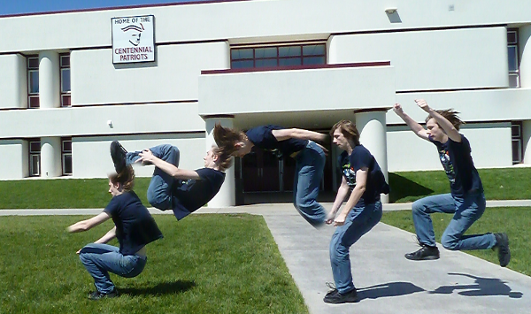
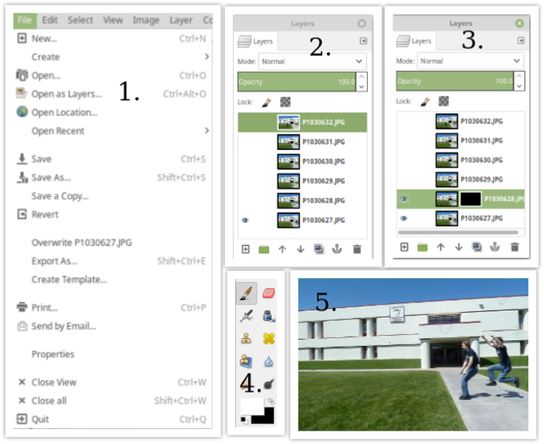
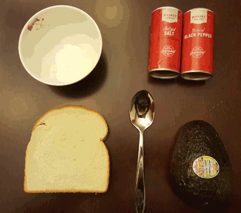
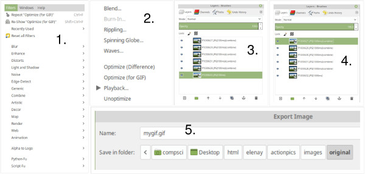
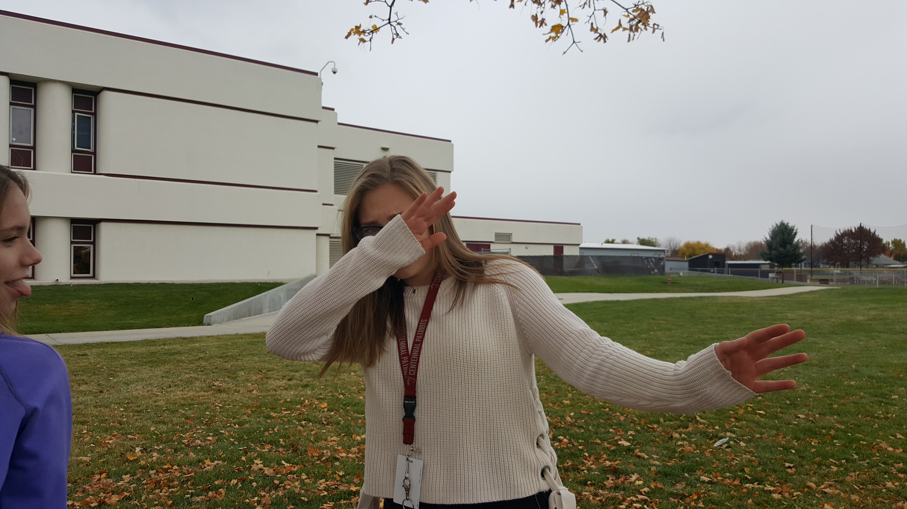
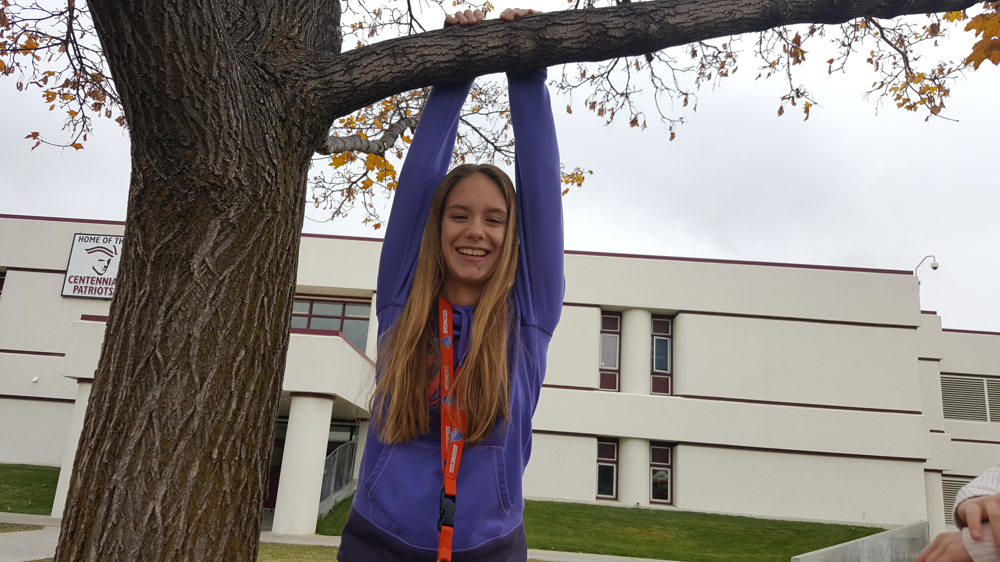
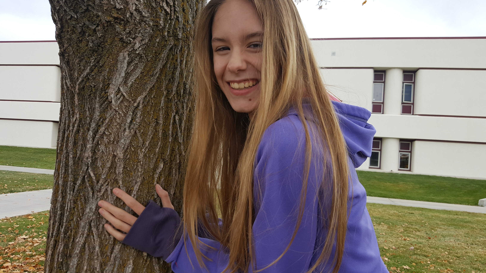

Action Pictures I Made! |
|
|---|---|
| My Action Picture | How I made this picture |
|  |

Steps to Make a Sequence Action Pics1. First, I opened GIMP and clicked on "File". I then clicked "Open as Layers.." and then selected the images I wanted to be in my action pic. 2. Then, I deselected all the eyes from every image expect for the first one which would become my base image. 3. I then right-clikced the image, and choose to apply a black layer on it. I then clicked the eye on the image to overlap the layers. 4. On the toolbox, I then selected the paintbrush, and switched from a black color to white. 5. Finally, I colored in what I wanted from the second image onto my first image. I repeated this for each image I wanted to be a layer to achieve my final result. |

I love avocado toast - here's how to make it! |

Steps to Make a GIF1. After opening the images that I want as layers (see above step 1 for reference on procedure), I selected filters on the menu bar and then animation. 2. Then, I selected "Optimize (for GIF)" 3. I then opened the layers toolbox. 4. I doubled clicked the image times on each layer and changed it to 1000ms because I felt that it was a fast enough time to not make the GIF boring but was slow enough so that you could see each image individually. 5. Finally, I exported it as a GIF. |
|
My Slideshow |
|---|
|



|
Here are some images of my fellow collaboraters at work! |
My Video |
|
|---|---|
| I took this video on my Samsung Galaxy on the Boise River in the summer of 2018. | |